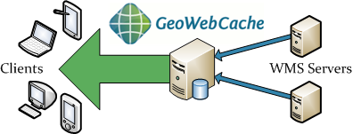
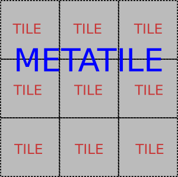

<!doctype html>
<html lang="de">

<head>
<meta charset="utf-8">

<title>Geoserver in action</title>

<meta name="description" content="GeoServer in action">
<meta name="author" content="Daniel Koch">
<meta name="author" content="Nils Bühner">

<meta name="apple-mobile-web-app-capable" content="yes" />
<meta name="apple-mobile-web-app-status-bar-style"
	content="black-translucent" />

<meta name="viewport"
	content="width=device-width, initial-scale=1.0, maximum-scale=1.0, user-scalable=no, minimal-ui">

<link rel="stylesheet" href="css/reveal.css">
<link rel="stylesheet" href="css/theme/night.css" id="theme">
<link rel="stylesheet" href="css/custom.css">

<!-- Code syntax highlighting -->
<link rel="stylesheet" href="lib/css/zenburn.css">

<!-- Printing and PDF exports -->
<script>
	var link = document.createElement('link');
	link.rel = 'stylesheet';
	link.type = 'text/css';
	link.href = window.location.search.match(/print-pdf/gi) ? 'css/print/pdf.css'
			: 'css/print/paper.css';
	document.getElementsByTagName('head')[0].appendChild(link);
</script>

<!--[if lt IE 9]>
		<script src="lib/js/html5shiv.js"></script>
		<![endif]-->
</head>

<body>

	<div class="reveal">

		<!-- Any section element inside of this container is displayed as a slide -->
		<div class="slides">
			<section id="start">
				<!-- data-background="img/geoserver-logo.png" data-background-size="30%"> -->
				<!-- 					 -->
				<h1>GeoServer in action</h1>
				<h4>Fortgeschrittene Möglichkeiten beim Einsatz des Geoservers</h4>
				<p>
					<br />Nils Bühner<br /> <small> <a
						href="mailto:buehner@terrestris.de">buehner@terrestris.de</a><br />
						<br /> <a href="http://www.terrestris.de">terrestris GmbH &
							Co KG</a>
					</small>
				</p>
			</section>

			<section id="about" data-background="img/terrestris-logo-black.svg"
				data-background-size="90%">
				<h2>Über uns</h2>
				<section id="nb">
					<div class="split-info">
						<div class="part">
							Nils Bühner<br /> <br />
							<a class="email" href="mailto:buehner@terrestris.de">buehner@terrestris.de</a>
							<a class="github" href="https://github.com/buehner">github.com/buehner</a>
						</div>
						<div class="part">
							<br /> <br /> <br />
							<div class="enumeration">
								<ul>
									<li>Informatiker</li>
									<li>Java, Spring, Hibernate, Maven, Webtechnologien</li>
									<li>Entwickler bei <a href="http://www.terrestris.de">terrestris</a></li>
								</ul>
							</div>
						</div>
					</div>
				</section>
				<section id="terrestris">
					<div class="split-info">
						<div class="part">
							<a href="http://terrestris.de/">terrestris.de</a><br /> <br /> <a class="twitter"
								href="https://twitter.com/terrestrisde/">@terrestrisde</a> <a
								class="github" href="https://github.com/terrestris/">github.com/terrestris</a>
						</div>
						<div class="part">
							<br />
							<div class="enumeration">
								<ul>
									<li>OpenSource GIS aus Bonn</li>
									<li>Projekte, Support, Schulung</li>
									<li>Beratung, Planung, Implementierung &amp; Wartung</li>
								</ul>
							</div>
						</div>
					</div>
				</section>
			</section>

			<section id="geoserver">
				<h2>GeoServer</h2>
				<section id="geoserver-basics">
					<div class="split-info">
						<div class="part">
							<br />
							<a class="github" href="https://github.com/geoserver">github.com/geoserver</a>
						</div>
						<div class="part">
							<div class="enumeration">
								<ul>
									<li>Java-basierter Server für Geodaten</li>
									<li>Standards des <a href="http://www.opengeospatial.org/">OGC</a><br />(z.B.
										WMS, WFS(-T), WPS)
									</li>
									<li>flexibel und erweiterbar</li>
									<li>gute Dokumentation (<a
										href="http://docs.geoserver.org/stable/user/">user</a>/<a
										href="http://docs.geoserver.org/stable/developer/">dev</a>)
									</li>
								</ul>
							</div>
						</div>
					</div>
				</section>
				<section id="geoserver-gui">
					<div class="split-info">
						<div class="part">
							
						</div>
						<div class="part">
							<div class="enumeration">
								<br /> <br /> <br /> <br />
								<ul>
									<li>Konfiguration über Weboberfläche</li>
									<li>Arbeitsbereiche, Datenquellen, Layer, Stile</li>
									<li>OGC-Dienste</li>
									<li>Monitoring<br />(Serverstatus, Logs)
									</li>
									<li>erweiterte Features<br />(z.B. GeoWebCache)
									</li>
								</ul>
							</div>
						</div>
					</div>
				</section>
			</section>

			<section id="fragestellungen" data-background="img/fragezeichen.svg"
				data-background-size="20%">
				<h2>Fragestellungen</h2>
				<br />
				<p class="fragment roll-in">Wie gehe ich mit dem GeoServer-Quellcode um?</p>
				<br />
				<p class="fragment roll-in">Wie kann ich den GeoServer um Funktionalität
					erweitern?</p>
				<br />
				<p class="fragment roll-in">Lässt sich der GeoServer auch programmatisch
					konfigurieren?</p>
				<br />
				<p class="fragment roll-in">Wie kann der GeoServer für den
					Produktivbetrieb optimiert werden?</p>
			</section>

			<section id="sources">
				<section id="technologien">
					<h2>Technologien</h2>
					<br />
					<div class="split-info">
						<div class="part">
							<a href="http://maven.apache.org/">maven.apache.org</a><br /> <br />
							<ul>
								<li>standardisierte Verwaltung von (Java-)Programmen</li>
								<li>Lebenszyklus der Software</li>
								<li>Validierung, Kompilierung, Paketierung, Installation und
									mehr</li>
							</ul>
						</div>
						<div class="part">
							<a href="http://git-scm.com/">git-scm.com</a><br /> <br />
							<ul>
								<li>verteilte Versionsverwaltung von Dateien</li>
								<li>nicht zwingend benötigt, aber sicher sinnvoll</li>
							</ul>
						</div>
					</div>
				</section>

				<section id="checkout-sources">
					<h2>Quellcode auschecken</h2>
						Mit <em>git</em>
						<pre><code data-trim class="bash">
							git clone https://github.com/geoserver/geoserver.git
						</code></pre><br/>
						In ein Verzeichnis mit einer <strong>pom.xml</strong><br />
						(Maven-Konfiguration) wechseln, z.B. zur <em>INSPIRE</em>-Erweiterung<br />
						<pre><code data-trim class="bash">
							cd geoserver/src/extension/inspire
						</code></pre>
					
				</section>

				<section id="package-sources">
					<h2>Maven benutzen</h2>
					<pre><code data-trim class="bash">
						mvn package
					</code></pre>
					<em>paketiert</em> den Code zu einer
					<code>.jar</code>-Datei im Unterordner <code>target/</code><br/>
					<br/>
					Beinhaltet die <em>Validierung</em>, <em>Kompilierung</em> und das <em>Testen</em> des Codes.<br/><br/>
					Schritte können auch einzeln ausgeführt werden, z.B.
					<pre><code data-trim class="bash">
						mvn compile
					</code></pre>
					Der Verzicht auf Tests beschleunigt den Prozess:
					<pre><code data-trim class="bash">
						mvn package -DskipTests
					</code></pre>
				</section>

			</section>

			<section id="extensions">
				<section id="extensions-overview">
					<h2>Erweiterungen</h2>
					<br/>
					<a href="http://geoserver.org/release/stable/" >geoserver.org/release/stable</a>
				</section>
				<section id="extensions-installation">
					<h2>Erweiterungen installieren</h2>
					<ol>
						<li class="fragment roll-in">Servlet-Container (z.B. <em>Tomcat</em>) stoppen</li>
						<li class="fragment roll-in"><code>.jar</code>-Artefakt(e) in das <code data-trim class="sql">WEB-INF/lib</code>-Verzeichnis des GeoServers kopieren</li>
						<li class="fragment roll-in">Servlet-Container starten</li>
						<li class="fragment roll-in">Prüfen, ob Erweiterung vorhanden</li>
					</ol><br/>
					<br/>
				</section>
			</section>

			<section id="zwischenbilanz" data-background="img/fragezeichen.svg"
				data-background-size="20%">
				<h2>Zwischenbilanz</h2>
				<br />
				<p class="fragment shrink highlight-green">Wie gehe ich mit dem GeoServer-Quellcode um?</p>
				<br />
				<p class="fragment shrink highlight-green">Wie kann ich den GeoServer um Funktionalität
					erweitern?</p>
				<br />
				<p class="fragment grow highlight-red">Lässt sich der GeoServer auch programmatisch
					konfigurieren?</p>
				<br />
				<p class="fragment grow highlight-red">Wie kann der GeoServer für den
					Produktivbetrieb optimiert werden?</p>
			</section>

			<section id="rest">
				<section id="rest-intro">
					<h2>REST</h2>
					<h5>(REpresentational State Transfer)</h5>

					<ul>
						<li class="fragment roll-in"><em><b>Adressierbarkeit</b></em><br/>
							<span>
								Jede Ressource hat eine eindeutige URI
							</span>
						</li>
						<li class="fragment roll-in"><em><b>Zustandslosigkeit</b></em><br/>
							<span>
								keine Zustandsinformationen;
								jede REST-Anfrage enthält alle
								Informationen, die zum Verständnis von
								Client/Server nötig sind
							</span>
						</li>
						<li class="fragment roll-in"><em><b>Repräsentation</b></em><br/>
							<span>
								Jede Ressource kann in unterschiedlichen
								Repräsentationen (z.B. im HTML-, JSON- und
								XML-Format) existieren
							</span>
						</li>
						<li class="fragment roll-in"><em><b>Standardmethoden</b></em><br/>
							<span>
								Der Zugriff auf jede Ressource muss über
								standardisierte Methoden erlangt werden können
							</span>
						</li>
					</ul>

				</section>

				<section id="rest-overview">
					<h2>REST mit HTTP</h2>

					<table>
						<thead>
							<tr>
								<th>METHODE</th>
								<th>BESCHREIBUNG</th>
								<th>BEISPIEL</th>
							</tr>
						</thead>
						<tbody>
							<tr class="fragment roll-in">
								<td>POST</td>
								<td>Erstelle eine Ressource (CREATE)</td>
								<td><a href="#/rest-example-create">Layer anlegen</a></td>
							</tr>
							<tr class="fragment roll-in">
								<td>GET</td>
								<td>Lese eine Ressource (READ)</td>
								<td><a href="#/rest-example-read">Arbeitsbereiche auslesen</a></td>
							</tr>
							<tr class="fragment roll-in">
								<td>PUT</td>
								<td>Aktualisiere eine Ressource (UPDATE)</td>
								<td><a href="#/rest-example-update">Layer aktualisieren</a></td>
							</tr>
							<tr class="fragment roll-in">
								<td>DELETE</td>
								<td>Entferne eine Ressource (DELETE)</td>
								<td><a href="#/rest-example-delete">Layer entfernen</a></td>
							</tr>
						</tbody>
					</table>

				</section>

				<section id="geoserver-rest">
					<h2>REST beim GeoServer</h2>
					Umsetzung per HTTP mit Basis-URL:
					<pre><code data-trim class="bash">http://my/geoserver/rest</code></pre>
					<ul>
						<li>Abruf in verschiedenen Formaten (Beispiel <em>Arbeitsbereiche</em>)</li>
						<ul>
							<li>HTML (Standard): <pre><code data-trim class="bash">http://my/geoserver/rest/workspaces.html</code></pre></li>
							<li>JSON: <pre><code data-trim class="bash">http://my/geoserver/rest/workspaces.json</code></pre></li>
							<li>XML: <pre><code data-trim class="bash">http://my/geoserver/rest/workspaces.xml</code></pre></li>
						</ul>
					</ul>
					<br/>Dokumentation: <a href="http://docs.geoserver.org/stable/en/user/rest/">http://docs.geoserver.org/stable/en/user/rest/</a><br/>
				</section>

				<section id="rest-example-create">
					<h2>Layer anlegen</h2>

					<i>Request:</i>

					<pre><code data-trim class="bash">
curl \
  -v \
  -u admin:geoserver \
  -XPOST \
  -H "Content-type: text/xml" \
  -d "<featureType>
        <name>myft</name>
        <nativeName>myftsource</nativeName>
        <nativeCRS>EPSG:4326</nativeCRS>
        <enabled>true</enabled>
      </featureType>" \
  http://my/geoserver/rest/workspaces/myws/datastores/mydata/featuretypes
					</code></pre>

					<i>Response:</i>

					<pre><code data-trim class="bash">
HTTP/1.1 201 Created
					</code></pre>

				</section>

				<section id="rest-example-read">
					<h2>Arbeitsbereiche auslesen</h2>

					<i>Request:</i>

					<pre><code data-trim class="bash">
curl \
  -v \
  -u admin:geoserver \
  -XGET \
  -H "Accept: text/xml" \
  http://my/geoserver/rest/workspaces
					</code></pre>

					<i>Response:</i>

					<pre><code data-trim class="xml">
<workspaces>
  <workspace>
    <name>myws</name>
    <atom:link xmlns:atom="http://www.w3.org/2005/Atom" rel="alternate" href="http://my/geoserver/rest/workspaces/myws.xml" type="application/xml"></atom:link>
  </workspace>
</workspaces>
					</code><pre>

				</section>

				<section id="rest-example-update">
					<h2>Layer aktualisieren</h2>
					<i>Request:</i>

					<pre><code data-trim class="bash">
curl \
  -v \
  -u admin:geoserver \
  -XPUT \
  -H "Content-type: text/xml" \
  -d "<featureType>
        <enabled>true</enabled>
        <srs>EPSG:900913</srs>
        <projectionPolicy>REPROJECT_TO_DECLARED</projectionPolicy>
      </featureType>" \
  http://my/geoserver/rest/workspaces/myws/datastores/myds/featuretypes/myft
					</code></pre>

					<i>Response:</i>

					<pre><code data-trim class="bash">
HTTP/1.1 200 OK
					</code></pre>

				</section>

				<section id="rest-example-delete">
					<h2>Layer entfernen</h2>

					<i>Request:</i>

					<pre><code data-trim class="bash">
curl \
  -v \
  -u admin:geoserver \
  -XDELETE \
  http://my/geoserver/rest/workspaces/myws/datastores/myds/featuretypes/myft?recurse=true
					</code></pre>

					<i>Response:</i>

					<pre><code data-trim class="bash">
HTTP/1.1 200 OK
					</code></pre>

				</section>

			</section>

			<section id="geoserver-optimization">
				<section id="geoserver-tuning">
					<h2>GeoServer optimieren</h2>
					<em>Wie kann der GeoServer für den Produktivbetrieb optimiert werden?</em><br><br>
					<ul>
						<li>Integrierter <em>GeoWebCache (GWC)</em></li>
						<li>Einstellungen in der GeoServer-GUI</li>
						<li><em>Java Virtual Machine (JVM)</em> tunen</li>
						<li>GeoServer-Datenverzeichnis auslagern</li>
					</ul><br/><br/>
					Schönes Whitepaper:<br/><a href="http://boundlessgeo.com/whitepaper/geoserver-production-2/">http://boundlessgeo.com/whitepaper/geoserver-production-2/</a>
				</section>

				<section id="geowebcache-1">
				<h2>GeoWebCache (GWC)</h2>
					<div class="split-info">
						<div class="part">
							
						</div>
						<div class="part">
							<div class="enumeration">
								<ul>
									<li>Proxy zwischen Client und GeoServer</li>
									<li>Kacheln einmalig berechnen, um Prozessierungszeit sparen</li>
									<li>Verfügt ebenfalls über ReST-Schnittstelle</li>
								</ul>

							<br/><br/><h4><a href="http://docs.geoserver.org/stable/en/user/geowebcache/">http://docs.geoserver.org/stable/en/user/geowebcache/</a></h4>
							</div>
						</div>
					</div>
				</section>

				<section id="geowebcache-2">
					<h2>GeoWebCache (GWC)</h2>
					Zwei Möglichkeiten zur Berechnung von Kartenkacheln:<br/><br/>
					<ul>
						<li><em>On-The-Fly-Prozessierung</em></li>
						<ul>
							<li>Berechnung (und Ablage im Cache) nur beim ersten Aufruf<br/><br/></li>
						</ul>
						<li><em>Vorberechnung von Kartenkacheln</em></li>
						<ul>
							<li>Die Kacheln eines Layers werden in definierten Zoomstufen und BBOX entlang eines Gridsets vorberechnet und abgelegt.</li>
						</ul>
					</ul>
					
					<br/>
					<small>Quelle: <a href="http://geowebcache.org">http://geowebcache.org</a></small>
				</section>

				<section id="geowebcache-3">
					<h2>GeoWebCache (GWC)</h2>
					
				</section>

				<section id="geoserver-gui-tuning">
					<h2>Einstellungen in der GUI</h2>
					
				</section>

				<section id="jvm-tuning-1">
					<h2>Java Virtual Machine (JVM)</h2>
					<code>JAVA_OPTS</code> in Abhängigkeit der Systemumgebung setzen, z.B.
					<pre><code data-trim class="bash">
						JAVA_OPTS="-server -Xms2g -Xmx2g -XX:MaxPermSize=256m -XX:+UseParallelGC -Dfile.encoding=UTF-8"
					</code></pre>
					<table>
						<thead>
							<tr>
								<th>PARAMETER</th>
								<th>BESCHREIBUNG</th>
								<th>BEISPIEL</th>
							</tr>
						</thead>
						<tbody>
							<tr>
								<td><small>-server</small></td>
								<td><small>Für Server optimierte JVM</small></td>
								<td></td>
							</tr>
							<tr>
								<td><small>-Xms</small></td>
								<td><small>Anfangsgröße des Java-Heap-Speichers. Empfehlung: 2-4GB</small></td>
								<td><small>-Xms2g</small></td>
							</tr>
							<tr>
								<td><small>-Xmx</small></td>
								<td><small>Maximale Größe des Java-Heap-Speichers. Evtl: <em>Xms=Xmx</em></small></td>
								<td><small>-Xmx2g</small></td>
							</tr>
							<tr>
								<td><small>-XX:PermSize</small></td>
								<td><small>Anfangsgröße des Speichers für Objektgenerierung<br/>(256m reichen)</small></td>
								<td><small>-XX:PermSize=256m</small></td>
							</tr>
							<tr>
								<td><small>-XX:MaxPermSize</small></td>
								<td><small>Maximalgröße des Speichers für Objektgenerierung<br/>(256m reichen)</small></td>
								<td><small>-XX:MaxPermSize=256m</small></td>
							</tr>
						</tbody>
					</table>
				</section>

				<section id="jvm-tuning-2">
					<h2>Java Virtual Machine (JVM)</h2>
					<table>
						<thead>
							<tr>
								<th>PARAMETER</th>
								<th>BESCHREIBUNG</th>
								<th>BEISPIEL</th>
							</tr>
						</thead>
						<tbody>
							<tr>
								<td><small>-Djavax.servlet.request.encoding</small></td>
								<td><small>Encoding eingehender Anfragen<br/>(Standard: ISO 8559-1)</small></td>
								<td><small>-Djavax.servlet.request.encoding=<br/>UTF-8</small></td>
							</tr>
							<tr>
								<td><small>-Djavax.servlet.response.encoding</small></td>
								<td><small>Kodierung ausgehender Antworten<br/>(Standard: ISO 8559-1)</small></td>
								<td><small>-Djavax.servlet.response.encoding=<br/>UTF-8</small></td>
							</tr>
							<tr>
								<td><small>-Dfile.encoding</small></td>
								<td><small>Zeichenkodierung beim Umgang mit statischen Dateien (Standard: Default des Betriebssystems)</small></td>
								<td><small>-Dfile.encoding=UTF-8</small></td>
							</tr>
							<tr>
								<td><small>-XX:+UseParallelGC</small></td>
								<td><small>Garbage Collection für Mehrkern-Systeme (siehe <a href="http://boundlessgeo.com/whitepaper/geoserver-production-2/#jvm">hier</a>)</small></td>
								<td></td>
							</tr>
							<tr>
								<td><small>-XX:+UseParallelOldGC</small></td>
								<td><small>s.o.</small></td>
								<td></td>
							</tr>
						</tbody>
					</table>
				</section>

				<section id="geoserver-datadir">
					<h2>GeoServer-Datenverzeichnis</h2>
					<ul>
						<li>Das Datenverzeichnis liegt standardmäßig "im" GeoServer.</li>
						<li>Es ist sinnvoll das Verzeichnis auszulagern, etwa für GS-Updates.</li>
						<li>Umgebungsvariable <code>GEOSERVER_DATA_DIR</code> muss gesetzt werden.</li>
						<li>Für den GWC kann auch <code>GEOWEBCACHE_CACHE_DIR</code> gesetzt werden.</li>
					</ul>
					

				</section>

				<section id="fazit" data-background="img/fragezeichen.svg"
				data-background-size="20%">
					<h2>Fazit</h2>
					<p class="highlight-green">Wie gehe ich mit dem GeoServer-Quellcode um?</p>
					<p class="fragment roll-in highlight-green"><code>Maven</code> und <code>git</code></p>
					<p class="highlight-green">Wie kann ich den GeoServer um Funktionalität erweitern?</p>
					<p class="fragment roll-in highlight-green"><code>JAR</code>-Artefakte ins <code>WEB-INF/lib</code> des GS</p>
					<p class="highlight-green">Lässt sich der GeoServer auch programmatisch konfigurieren?</p>
					<p class="fragment roll-in highlight-green"><code>ReST</code>-API</p>
					<p class="highlight-green">Wie kann der GeoServer für den Produktivbetrieb optimiert werden?</p>
					<p class="fragment roll-in highlight-green">GUI, GWC, JVM...</p>
				</section>

				<section id="bye">
					<h3>Vielen Dank für die Aufmerksamkeit!</h3>
					<h2>Fragen?</h2>
					<small>Workshop: <a href="http://workshops.terrestris.de">http://workshops.terrestris.de</a><br/><br/>
					Vortrag: <a href="http://rawgit.com/buehner/geoserver-in-action/master/index.html">http://rawgit.com/buehner/geoserver-in-action/master/index.html</a></small>
				</section>
			</section>

		</div>

		<script src="lib/js/head.min.js"></script>
		<script src="js/reveal.js"></script>

		<script>
			// Full list of configuration options available at:
			// https://github.com/hakimel/reveal.js#configuration
			Reveal.initialize({
				controls : true,
				progress : true,
				history : true,
				center : true,
				slideNumber : false,
				keyboard : true,
				overview : true,
				loop : false,
				backgroundTransition : 'zoom',

				transition : 'default', // none/fade/slide/convex/concave/zoom

				// Optional reveal.js plugins
				dependencies : [ {
					src : 'lib/js/classList.js',
					condition : function() {
						return !document.body.classList;
					}
				}, {
					src : 'plugin/markdown/marked.js',
					condition : function() {
						return !!document.querySelector('[data-markdown]');
					}
				}, {
					src : 'plugin/markdown/markdown.js',
					condition : function() {
						return !!document.querySelector('[data-markdown]');
					}
				}, {
					src : 'plugin/highlight/highlight.js',
					async : true,
					condition : function() {
						return !!document.querySelector('pre code');
					},
					callback : function() {
						hljs.initHighlightingOnLoad();
					}
				}, {
					src : 'plugin/zoom-js/zoom.js',
					async : true
				}, {
					src : 'plugin/notes/notes.js',
					async : true
				} ]
			});
		</script>
</body>
</html>
